Potensi Tanpa Batas
Ruang bagi setiap siswa menemukan dan mengasah bakatnya.
Tiada Hari Tanpa Prestasi, Tiada Prestasi Tanpa Kerja Keras. Mewujudkan generasi unggul berlandaskan Profil Pelajar Pancasila.
"MENJADI SEKOLAH UNGGUL YANG BERDAYA SAING GLOBAL MENGHASILKAN LULUSAN BERKARAKTER, BERBASIS IPTEK, DAN INOVASI BERKELANJUTAN PADA TAHUN 2028"
Kami membimbing setiap peserta didik untuk menggali potensi terbaik mereka melalui ekosistem pembelajaran yang kolaboratif, berbasis teknologi, dan menjunjung tinggi nilai kebudayaan nasional.
Ruang bagi setiap siswa menemukan dan mengasah bakatnya.
Lingkungan aman, sehat, dan memantik rasa ingin tahu.
Karakter yang berakar pada nilai keimanan dan akhlak mulia.
Literasi digital, bahasa, dan kolaborasi lintas budaya.
SMP Negeri 5 Bandung memiliki akar sejarah panjang sebagai institusi pendidikan terkemuka sejak era kolonial di Jalan Sumatera No. 40.
Didirikan oleh pemerintah Hindia Belanda sebagai sekolah MULO (Meer Uitgebreid Lager Onderwijs) dengan pengantar bahasa Belanda.
Gedung sempat beralih fungsi menjadi markas militer dan tempat penahanan selama Perang Dunia II.
Berubah status menjadi VHO (Voortgezet Hoger Onderwijs) dengan memadukan kurikulum nasional dan pengantar dwibahasa.
Pengelolaan diserahkan sepenuhnya kepada Republik Indonesia dan resmi menyandang nama SMP Negeri 5 Bandung.
Terkenal dengan arsitektur menara kembar (twin tower) di Jl. Sumatera No. 40, telah mencetak banyak tokoh nasional seperti B.J. Habibie, Iwan Fals, hingga Raffi Ahmad.
Kabar terbaru, kegiatan kesiswaan, dan prestasi membanggakan warga SMPN 5 Bandung.

Ajang kreativitas seni dan kolaborasi pelajar yang meriah pada 24 Oktober 2026.
Baca SelengkapnyaProgram pembiasaan karakter, literasi, dan pengembangan potensi siswa yang rutin dilaksanakan untuk membentuk profil pelajar Pancasila.

Pementasan musik live oleh siswa di sekolah untuk menyambut warga sekolah setiap Kamis pagi dengan penuh energi positif.

Kegiatan kerja bakti bersama menjaga kebersihan lingkungan sekolah, senam sehat, serta merawat taman Adiwiyata.
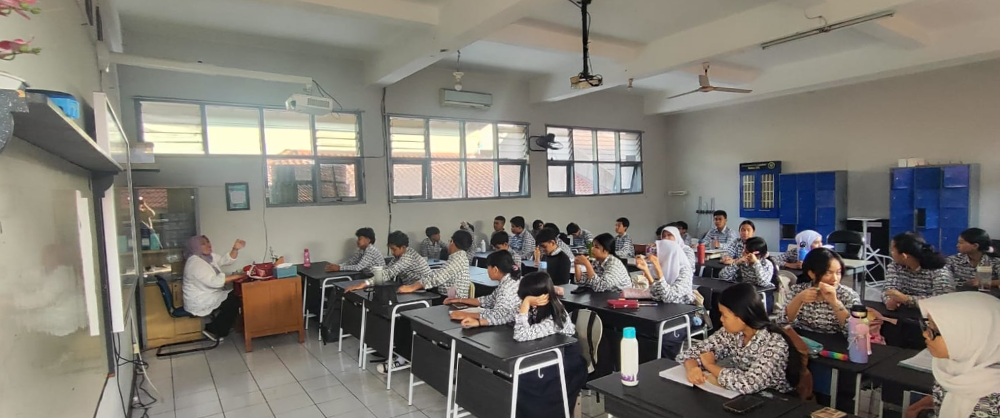
Program peningkatan kemampuan berpikir kritis, analisis data, dan budaya membaca buku sebelum kegiatan belajar dimulai.
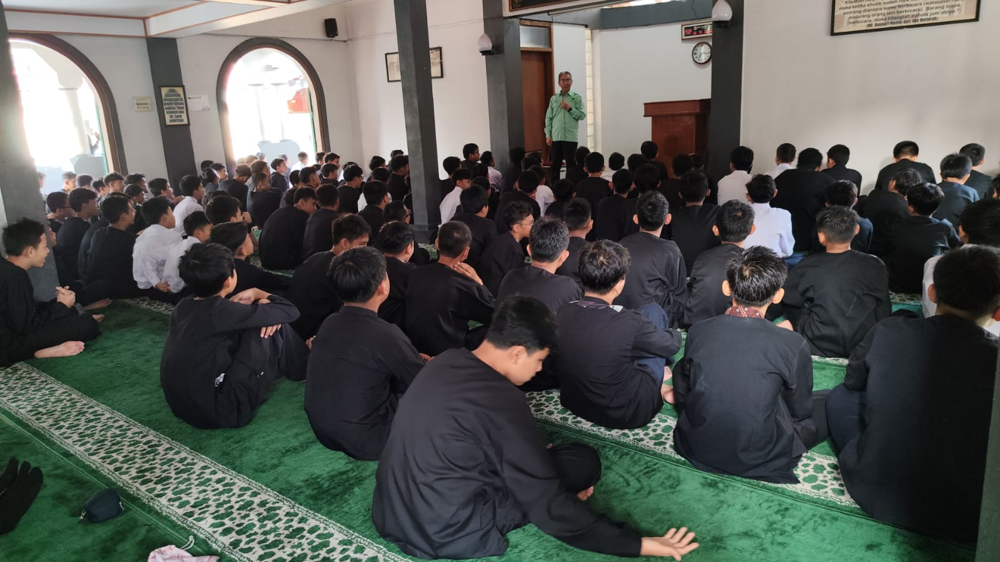
Pembiasaan ibadah harian untuk memperkuat keimanan, ketakwaan, serta membentuk akhlak mulia seluruh warga sekolah.
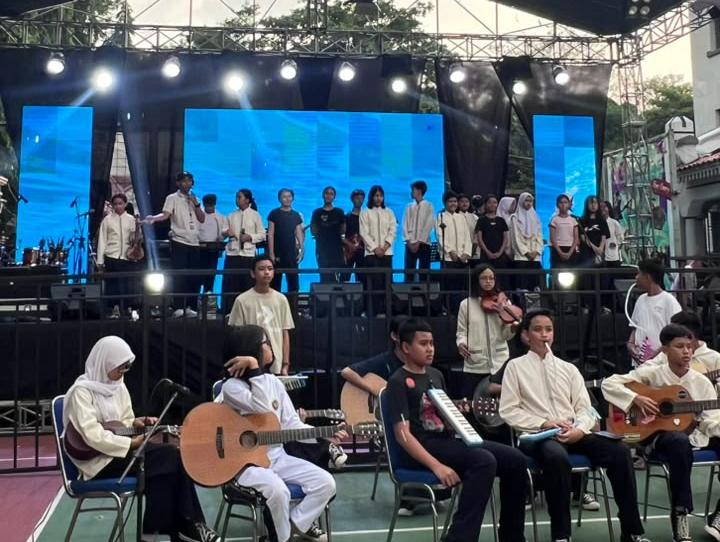
Musik dan kreativitas band sekolah.
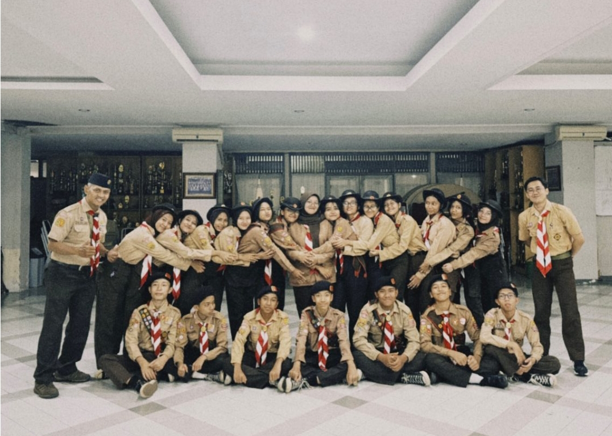
Mandiri, tangguh, dan peduli sesama.
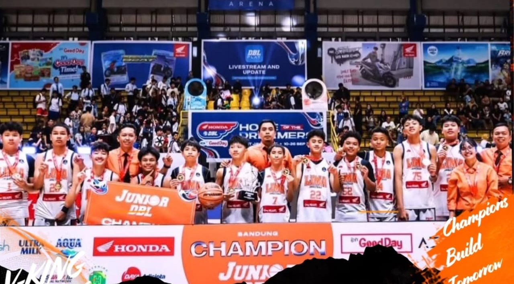
Sportivitas, taktik, dan kerja tim.
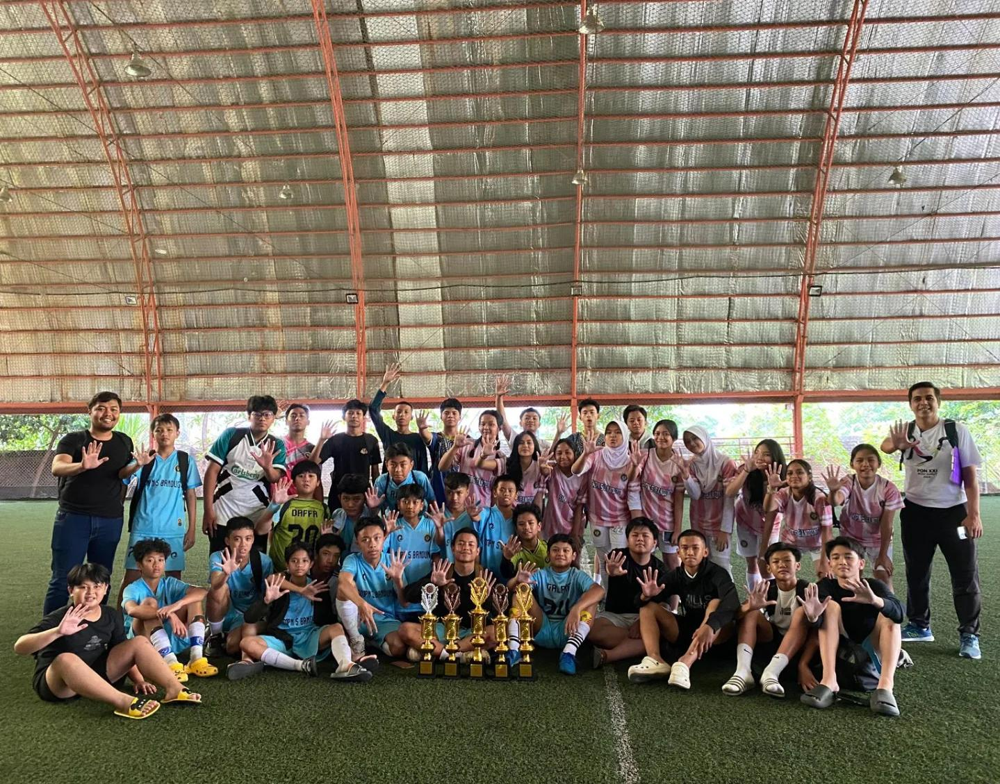
Kerjasama, stamina, dan sportivitas.
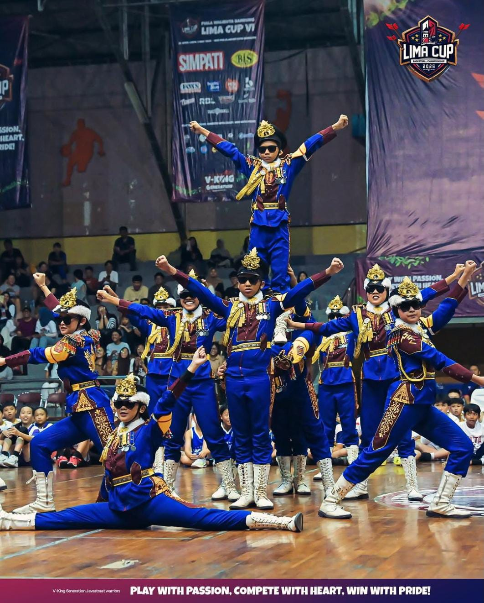
Kedisiplinan, baris-berbaris, dan jiwa korsa.
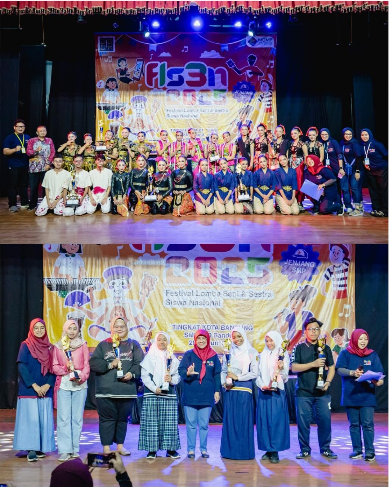
Melestarikan seni budaya Nusantara.

Harmoni vokal dan paduan suara.
Sarana dan prasarana modern yang terintegrasi dengan bangunan cagar budaya untuk mendukung kegiatan belajar, riset, ibadah, dan pembinaan prestasi siswa.
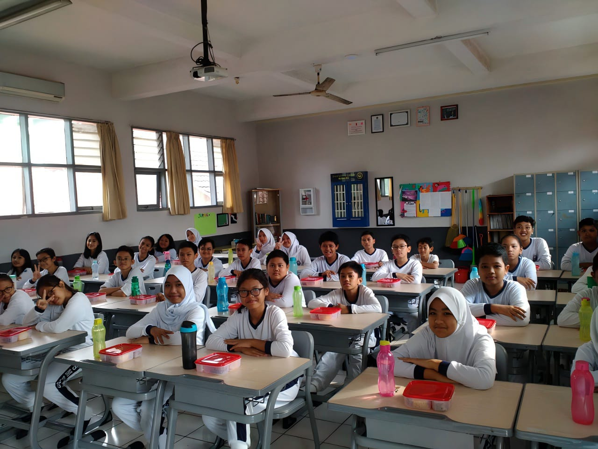
Ruang belajar nyaman dengan pencahayaan alami.
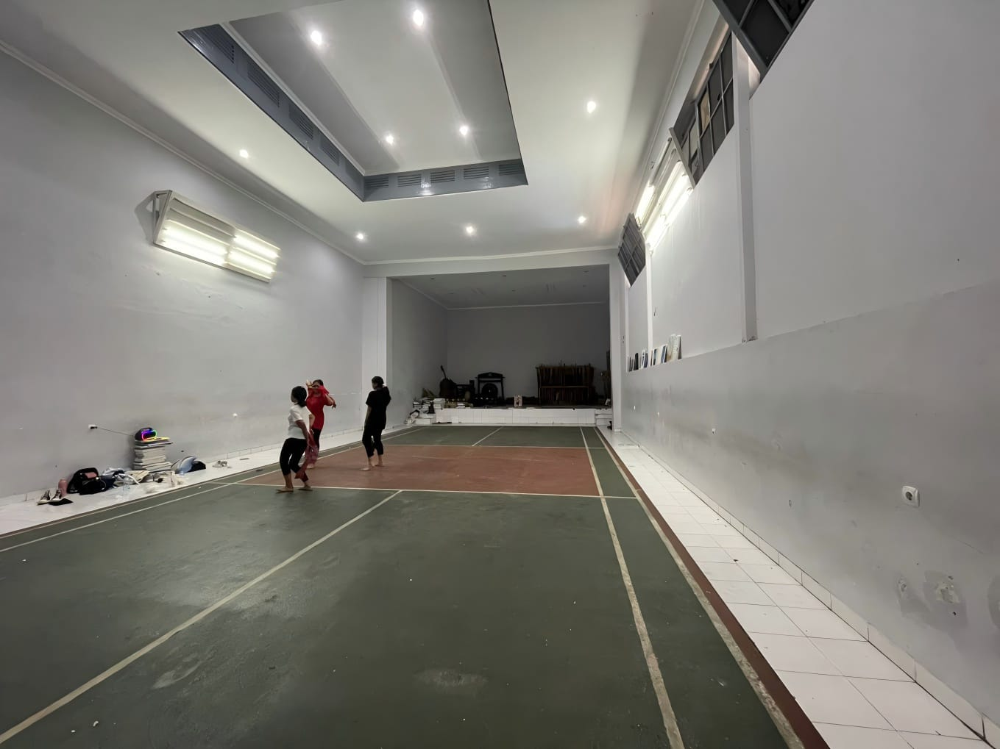
Ruangan yang biasa dipakai siswaa untuk kegiatan ekstrakurikuler, kegiatan khusus, dan olahraga indoor
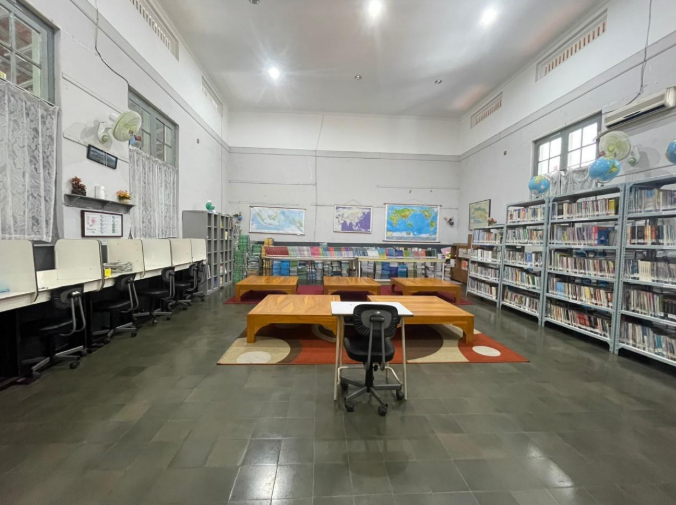
Sarana belajar yang nyaman dengan koleksi buku dan sumber daya informasi yang lengkap.
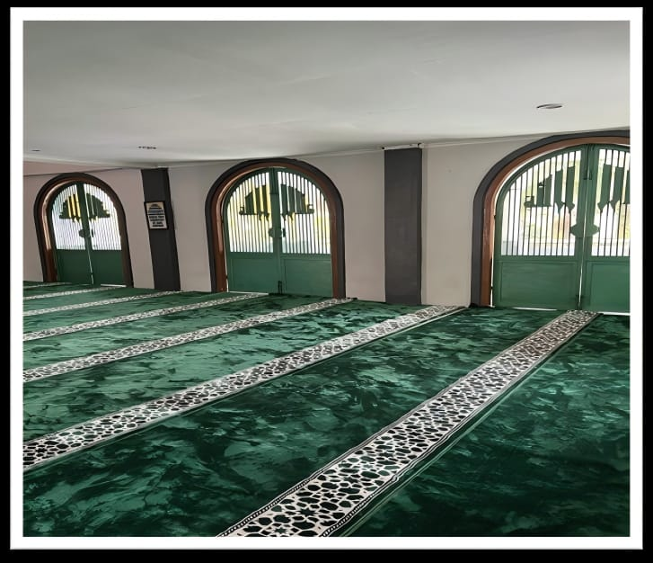
Pusat kegiatan keagamaan, sholat berjamaah, dan pembinaan akhlak warga sekolah.
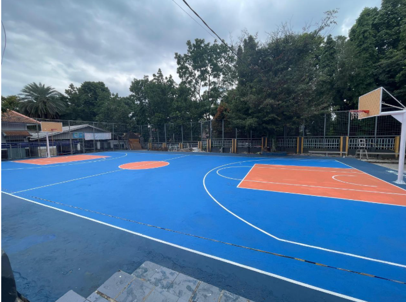
Arena olahraga basket, futsal, dan upacara bendera di halaman ikonik menara kembar.
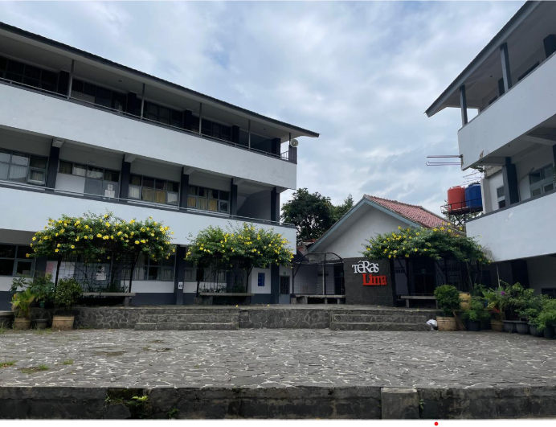
Teras yang luas dan nyaman untuk para siswa beristirahat dan berbincang bersama teman-temannya.
Punya pertanyaan seputar PPDB atau kerja sama? Hubungi kami melalui saluran resmi di bawah ini.
Jl. Sumatera No.40, Merdeka, Kec. Sumur Bandung, Kota Bandung, Jawa Barat 40113
(022) 4207121
smpnegeri05bandung@gmail.com